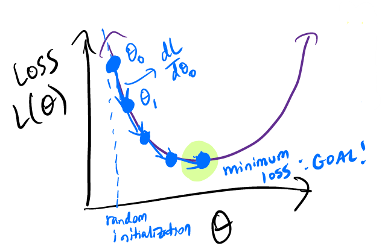
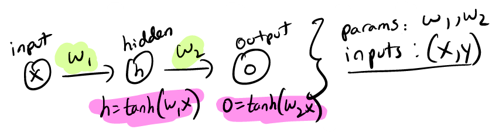

Backpropagation
How do we train to yield great prediction?
- Define a loss function
- Calculate the gradient of
- Take a step in the direction of the negative gradient: Minimizing the loss: 
Example: Single Neuron

STEP1: Forward propagation
compute the value of each neuron h, o using the model equations
predict the value of y: o
Goal: make o as close to y as possible
STEP2: Compute loss function
Using square loss in this example for simplicity